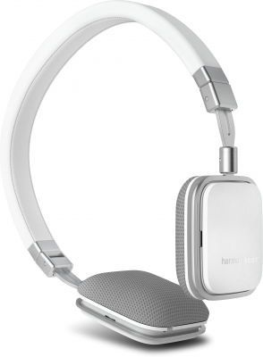
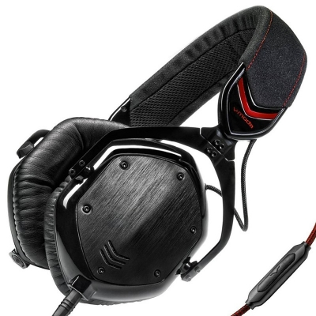
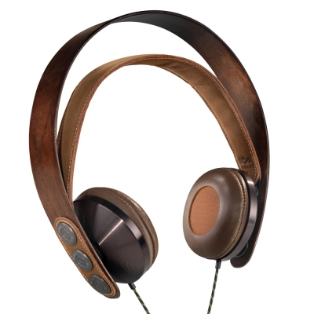

|  | Наушники Harman/Kardon Soho I Black Harman Kardon Soho - элегантные накладные наушники премиум-класса, Необычный, утончённый корпус, высокое качество отделки и хорошее качество звука. Soho изготовлены из металла, точки соприкосновения наушников с головой отделаны качественной кожей. Металл придаёт модели ощущение прочности и надёжности. Harman Kardon Soho на европейском рынке они уже устоялись, а у нас появились недавно. |
|
|  | Наушники V-Moda Crossfade M-100 Перед Вами модель наушников от знаменитого американского бренда V-Мoda, чья штаб квартира находиться в самом сердце Лос-Анджелеса – Голливуде. Разработчики сделали все возможное, чтобы гармонично совместить оригинальный стиль с по-настоящему качественно сбалансированным звуком. |
|
|  | Наушники House of Marley EXODUS Бренд The House of Marley, основанный наследниками великого исполнителя регги Боба Марли, пользуется неплохим успехом среди ценителей творчества Боба. Не так давно на выставке электроники CES 2011 House of Marley представили различные аудио-устройства. Все устройства компании House of Marley отличаются уникальным стилем и экологичностью исполенния. |